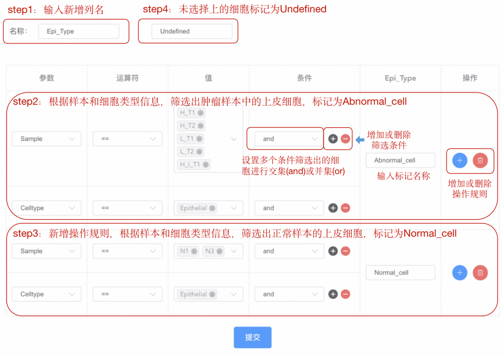
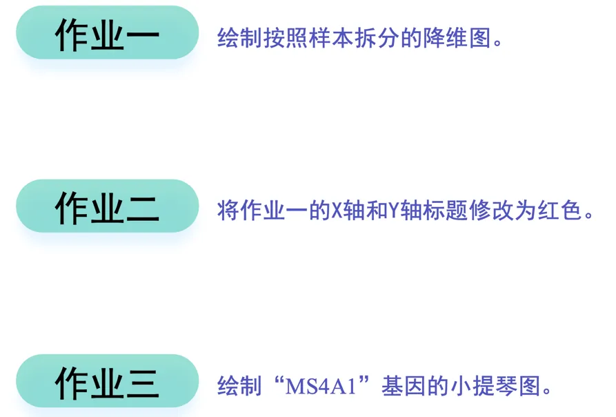

零代码单细胞| 单细胞个性化绘图
原文：https://mp.weixin.qq.com/s?__biz=MzAwMzIzOTk5OQ==&mid=2247510401&idx=3&sn=28f72410841791c00bab40141388a50d&chksm=9b3cd0d1ac4b59c73292ae53863e3ca4c8c44b87b85157b02bd66efbf71f7ba72c008e605745#rd 合集：单细胞云平台
导语 .
精美的图表是发表高分文章的必备法宝！
快速实现图表的整理也是研究线索挖掘的利器。
那么想有好看的图，就一定要会R、Python、和那个gg啥来着...吗？
SeekSoul Online单细胞云平台可以帮你快速作图，精细调图！
云 平台访问链接：https://seeksoul.online/t_static/Biomamba/Biomamba.html
各位同学需要联系您的专属在线客服，获取demo数据后，进行操作学习。

第三期的训练营课程就来到直观展示单细胞数据的绘图环节。
PS：中秋节还在学习的你辛苦啦，要知道每个时代，都悄悄犒赏会学习的人！˗ˋˏ♡ˎˊ˗
第三讲：绘图小达人，云平台让结果“动”起来
精华复现
降维聚类图怎么画？
我们利用SeekSoul Online上绘制了一个降维聚类图， 也就是单细胞分析里面常见的Dimplot图。
这个图里面横坐标和纵坐标分别代表了降维后的两个纬度，数值只是代表了细胞间的相对距离，不具有生物学意义，不同的颜色代表不同的细胞类型。
你可以按照自己想要的分类标签切换不同的展示内容，只需要更换分组因子参数即可。
SeekSoul Online也支持个性化的在线交互式调整展示图的内容。
基因表达图怎么画？
这里我们利用SeekSoul Online绘制了一个单细胞数据里面基因表达情况的图（featureplot图）。 features参数中可以指定你想画的基因的名字，拆分因子参数可以按照样本或分组等标签分别展示多个纬度的结果。 绘制出来的图形同样可以自由调整。

做研究不但要画图，整理图表也很关键， 来来来看下这个~
在SeekSoul Online上，你可以自由的给分析结果添加结果说明，不同的结果还能组织成不同的章节，直接形成文章的figure目录， 还会看起来眼花缭乱吗？？？
除此之外我们还支持气泡图、热图、小提琴图、柱状体、饼图，快来云平台上亲身体验一下吧！
你以为这就结束了？
SeekSoul Online还可以让你仔细的挑出来一群群的小细胞，来画各种小图图 ，相当于拿着手术刀来扒拉数据了有么有？先来看看具体咋实现的~

图片看不懂？没关系，那就看下上面我录制好的视频哈。
看不懂的话，留言告诉我，我改还不行吗...
好啦，本次的主要介绍就到这里了，下面是我们的学习打卡 内容：
请在demo数据中实现下面的操作，期待你能完成这些操作，并且将内容回传给我啊。
下次课程我们再见面。
